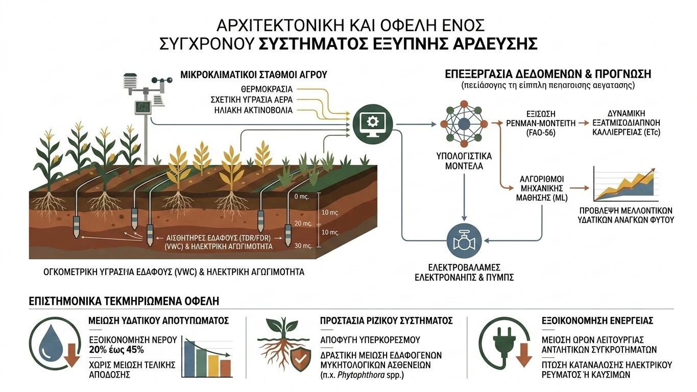

Η ορθολογική διαχείριση του νερού αποτελεί τη μεγαλύτερη πρόκληση για την παγκόσμια γεωργία. Σύμφωνα με τον Οργανισμό Τροφίμων και Γεωργίας (FAO), ο πρωτογενής τομέας καταναλώνει περίπου το 70% των παγκόσμιων αποθεμάτων γλυκού νερού. Η κλιματική αλλαγή και η συχνότητα των περιόδων ξηρασίας επιβάλλουν τη μετάβαση από τα παραδοσιακά, σταθερά χρονικά προγράμματα ποτίσματος σε δυναμικά, "έξυπνα" συστήματα άρδευσης (Smart Irrigation) βασισμένα στο Internet of Things (IoT) και σε δεδομένα πεδίου.
Η αρχιτεκτονική ενός σύγχρονου συστήματος έξυπνης άρδευσης στηρίζεται στην αδιάλειπτη συλλογή φυσικών παραμέτρων...

Η πραγματική καινοτομία έγκειται στην επεξεργασία αυτών των δεδομένων...
Η αρχιτεκτονική ενός σύγχρονου συστήματος έξυπνης άρδευσης στηρίζεται στην αδιάλειπτη συλλογή φυσικών παραμέτρων. Αισθητήρες εδάφους (TDR/FDR) τοποθετούνται σε στρατηγικά βάθη εντός της ριζοσφαίρας για τη μέτρηση της ογκομετρικής υγρασίας εδάφους (VWC) και της ηλεκτρικής αγωγιμότητας. Ταυτόχρονα, μικροκλιματικοί σταθμοί αγρού καταγράφουν τη θερμοκρασία, τη σχετική υγρασία του αέρα και την ηλιακή ακτινοβολία.
Η πραγματική καινοτομία έγκειται στην επεξεργασία αυτών των δεδομένων. Αντί για απλή ενεργοποίηση των ηλεκτροβανών με βάση ένα κατώφλι υγρασίας, τα σύγχρονα υπολογιστικά μοντέλα ενσωματώνουν την εξίσωση Penman-Monteith (FAO-56) για τον ακριβή υπολογισμό της δυναμικής εξατμισοδιαπνοής της καλλιέργειας (ETc) σε πραγματικό χρόνο. Με τη χρήση αλγορίθμων Μηχανικής Μάθησης (Machine Learning), το σύστημα συνδυάζει τα δεδομένα του εδάφους με τις μετεωρολογικές προγνώσεις, προβλέποντας τις μελλοντικές ανάγκες του φυτού σε νερό προτού εμφανιστεί οποιοδήποτε σύμπτωμα υδατικού στρες.
Τα επιστημονικά τεκμηριωμένα οφέλη αυτής της προσέγγισης περιλαμβάνουν:
- Μείωση Υδατικού Αποτυπώματος: Μελέτες δείχνουν εξοικονόμηση νερού που κυμαίνεται από 20% έως και 45% σε σύγκριση με τη συμβατική άρδευση, χωρίς καμία μείωση της τελικής απόδοσης.
- Προστασία Ριζικού Συστήματος: Η αποφυγή του υπερκορεσμού αποτρέπει συνθήκες ασφυξίας των ριζών και μειώνει δραστικά την ανάπτυξη εδαφογενών μυκητολογικών ασθενειών (π.χ. Phytophthora spp.).
- Εξοικονόμηση Ενέργειας: Η μείωση των ωρών λειτουργίας των αντλητικών συγκροτημάτων επιφέρει άμεση πτώση στην κατανάλωση ηλεκτρικού ρεύματος ή καυσίμων.
Η εφαρμογή της έξυπνης άρδευσης μετατρέπει τη λήψη αποφάσεων από εμπειρική σε απόλυτα ποσοτική. Για τον σύγχρονο γεωπόνο και παραγωγό, η υιοθέτηση αυτών των τεχνολογιών δεν αποτελεί απλώς μια οικολογική αναγκαιότητα, αλλά το βασικότερο εργαλείο διασφάλισης της βιωσιμότητας και της οικονομικής αποδοτικότητας της αγροτικής εκμετάλλευσης.